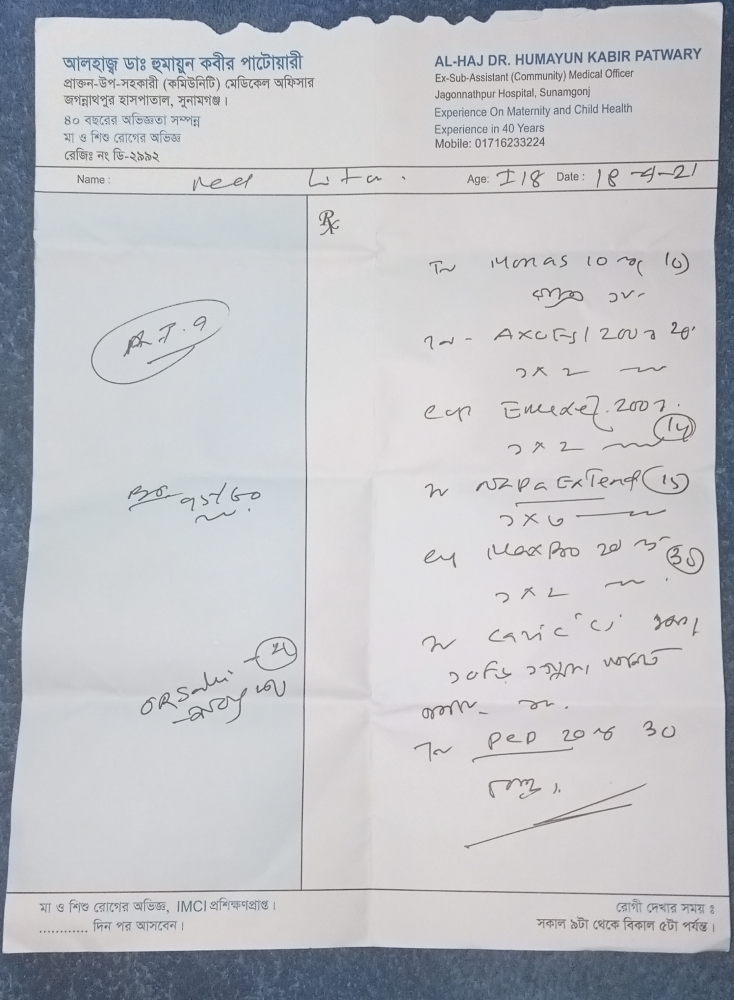
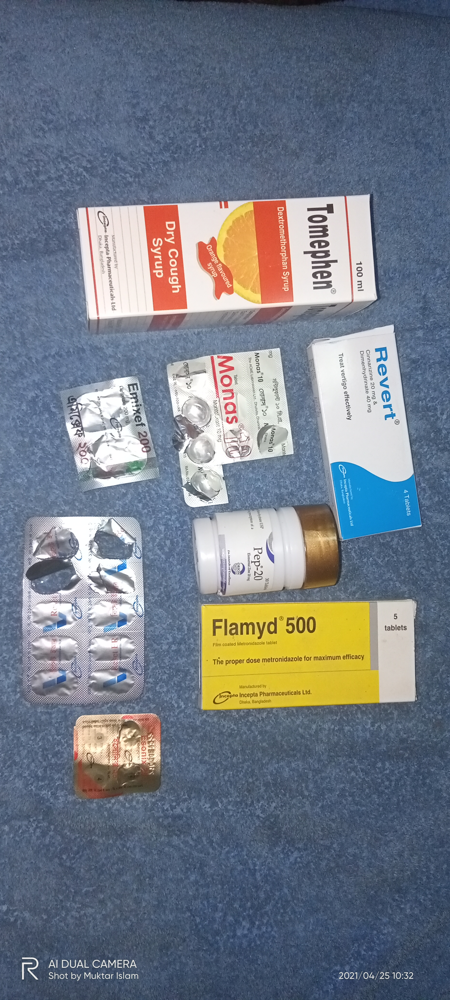

My All Problems
আস্সালামু আলাইকুম
আমার খুব ইচ্ছে ছিল আমি SCIC তে যাব কিন্তু আমার কি কপাল যে অসুস্থ থাকার কারণে তা আর হলো না। আমি বিগত 10 দিন যাবত খুব অসুস্থ থাকার কারণে আমি অ্যাসাইনমেন্ট জমা দিতে পারলাম না। আর আমার নাম মিঠন। মুক্তার ইসলাম আমার বড় ভাইয়ের নাম। আমি এই গ্রুপের একজন নিয়মিত ছাত্র। আমি প্রথম দিকে অ্যাসাইনমেন্ট করার চেষ্ঠা করছিলাম কিন্তু আরও অসুস্থ হওয়ার কারণে ডাক্তার তা করতে নিষেধ করছে এবং কিছুদিন বিশ্রাম নিতে বলছে। আর আমার সবচেয়ে বেশি দোষ হচ্ছে আমি সারাদিন এই কোর্স নিয়ে পড়ে থাকার কারণে আমার এই অসুস্থতা, এমনকি মাঝে মাঝে বাইরে যাবার সময় পেতাম না। আল্লাহ জানে, আপনারা এখন কি সিদ্ধান্ত নিবেন তা আপনাদের কাছে ছেরে দিলাম। আমার জন্য দোয়া করবেন। আর নিচে আমার MEDICAL PROVE অর্থাত প্রেসকিপসন, MEDICINE এর ছবি নিচে দিলাম...

